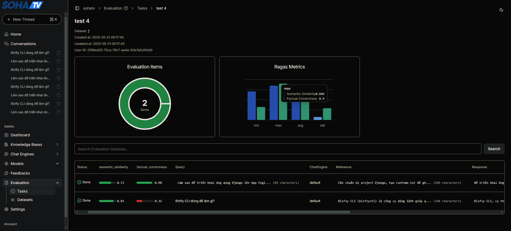

1. Dataset
- Dataset này dùng để tham chiếu đánh giá cho câu trả lời của tidb autoflow trả ra.
- Một file csv có 2 cột:
- query: câu hỏi.
- reference: câu trả lời kỳ vọng
2. Tasks
-
Hiện tại đánh giá 2 tiêu chí đánh giá:
- Độ chính xác thực tế (Factual Correctness): Chỉ số chỉ số đánh giá mức độ chính xác về mặt sự thật của
response(câu trả lời được tạo ra) so vớireference(câu trả lời tham chiếu). Chỉ số này được sử dụng để xác định mức độ mà câu trả lời tạo ra phù hợp với thông tin trong câu trả lời tham chiếu. Nó đảm bảo rằng hệ thống Chat Engine cung cấp thông tin chính xác và đáng tin cậy. - Điểm số
FactualCorrectnessnằm trong khoảng từ 0 đến 1, với giá trị càng cao thể hiện độ chính xác càng tốt.- 0 nghĩa là hoàn toàn sai sự thật hoặc không liên quan.
- 1 nghĩa là hoàn toàn đúng và đầy đủ thông tin thực tế như câu trả lời chuẩn.
- Độ tương đồng ngữ nghĩa (Semantic Similarity): Chỉ số này đánh giá mức độ tương đồng về ý nghĩa giữa phản hồi được tạo và phản hồi kỳ vọng. Nó giúp xác định mức độ phù hợp về ngữ cảnh và tính mạch lạc trong hiệu suất hoạt động của Chat Engine.
- Độ chính xác thực tế (Factual Correctness): Chỉ số chỉ số đánh giá mức độ chính xác về mặt sự thật của
-
Kết quả đánh giá
{
"task_id": "b41743fc-8385-4ebd-8987-aa10f6b21216",
"results": [
{
"user_input": "Bizfly CLI dùng để làm gì?",
"response": "Bizfly CLI, cụ thể là công cụ dòng lệnh bizflyctl, được sử dụng để tương tác với các dịch vụ của Bizfly Cloud. [^1] Theo tài liệu cung cấp, bizflyctl cho phép thực hiện các tác vụ như liệt kê và tải xuống các ảnh tùy chỉnh (custom-image). [^2]\n\n**Cách sử dụng bizflyctl trên Windows:**\n\n1. **Cài đặt:** Truy cập vào [https://github.com/bizflycloud/bizflyctl/releases](https://github.com/bizflycloud/bizflyctl/releases) để tải xuống phiên bản phù hợp với hệ điều hành Windows. Giải nén file đã tải về. [^1]\n\n2. **Tạo file cấu hình .bizfly.yaml:** Tạo một file tên .bizfly.yaml trong thư mục C:\\Users\\yourusername\\ (thay yourusername bằng tên người dùng của bạn) với nội dung bao gồm email và mật khẩu tài khoản dashboard của bạn: [^1]\n\n```yaml\nemail: <your email>\npassword: <your password>\n```\n\n3. **Mở CMD:** Mở cửa sổ Command Prompt (CMD) tại thư mục chứa file bizflyctl. [^1]\n\n4. **Kiểm tra và sử dụng lệnh:** Sử dụng các lệnh sau để kiểm tra và tương tác với dịch vụ Bizfly Cloud: [^1, ^2]\n * bizfly server list: Liệt kê danh sách Cloud Server. [^1]\n * bizfly custom-image list: Liệt kê các custom-image. [^2]\n * bizfly custom-image download <ID image>: Tải xuống custom-image với ID cụ thể. [^2] (Thay <ID image> bằng ID của ảnh tùy chỉnh bạn muốn tải xuống).\n\n**Tóm lại:** Bizfly CLI, thông qua công cụ bizflyctl, cung cấp giao diện dòng lệnh để quản lý các dịch vụ Bizfly Cloud trên Windows, bao gồm việc quản lý Cloud Server và custom-image. Việc sử dụng đòi hỏi cài đặt bizflyctl, tạo file cấu hình .bizfly.yaml chứa thông tin đăng nhập và sử dụng các lệnh tương ứng trong CMD.\n\n[^1]: Cài đặt bizflyctl(Windows) (trang 2/6, 3/6, 4/6)\n[^2]: Hướng dẫn dowload custome-image (trang 5/6, 6/6)",
"reference": "Bizfly CLI (bizflyctl) là công cụ dòng lệnh giúp quản lý dịch vụ Bizfly Cloud, bao gồm quản lý server, image, và các dịch vụ cloud khác từ terminal.",
"factual_correctness": 0.32,
"semantic_similarity": 0.8489698592324304
}
]
}
3. Chi tiết xử lý đánh giá trong Ragas
- Độ chính xác thực tế (Factual Correctness):
-
Chỉ số đánh giá mức độ chính xác về mặt sự thật của
response(câu trả lời được tạo ra) so vớireference(câu trả lời tham chiếu). Chỉ số này được sử dụng để xác định mức độ mà câu trả lời tạo ra phù hợp với thông tin trong câu trả lời tham chiếu. Chỉ số này được sử dụng để xác định mức độ mà câu trả lời tạo ra “đúng sự thật” với thông tin trong câu trả lời tham chiếu. -
Điểm số
FactualCorrectnessnằm trong khoảng từ 0 đến 1, với giá trị càng cao thể hiện độ chính xác càng tốt.
- 0 nghĩa là hoàn toàn sai sự thật hoặc không liên quan.
- 1 nghĩa là hoàn toàn đúng và đầy đủ thông tin thực tế như câu trả lời chuẩn. -
**Các bước xử lý: **
- Phân tách response và reference thành các “mệnh đề” (claims)
- Để đo lường mức độ phù hợp giữa
responsevàreference, chỉ số này sử dụng mô hình ngôn ngữ lớn (LLM) để phân tách cả hai thành các “mệnh đề” (claims). - Ví dụ: “Elon Musk là CEO của Tesla và SpaceX” → hai claims:
- “Elon Musk là CEO của Tesla”
- “Elon Musk là CEO của SpaceX”
- Để đo lường mức độ phù hợp giữa
{ "method": "post", "url": "/chat/completions", "files": None, "json_data": { "messages": [ { "role": "user", "content": "\n Decompose and break down each of the input sentences into one or more standalone statements. Each statement should be a standalone claim that can be independently verified.\n Follow the level of atomicity and coverage as shown in the examples.\n \nPlease return the output in a JSON format that complies with the following schema as specified in JSON Schema:\n{'properties': {'decomposed_claims': {'items': {'items': {'type': 'string'}, 'type': 'array'}, 'title': 'Decomposed Claims', 'type': 'array'}}, 'required': ['decomposed_claims'], 'title': 'ClaimDecompositionOutput', 'type': 'object'}\n\n--------EXAMPLES-----------\nExample 1\nInput: {\n \"response\": \"Charles Babbage was a French mathematician, philosopher, and food critic.\",\n \"sentences\": [\n \"Charles Babbage was a French mathematician, philosopher, and food critic.\"\n ]\n}\nOutput: {\n \"decomposed_claims\": [\n [\n \"Charles Babbage was a mathematician and philosopher.\"\n ]\n ]\n}\n\nExample 2\nInput: {\n \"response\": \"Albert Einstein was a German theoretical physicist. He developed the theory of relativity and also contributed to the development of quantum mechanics.\",\n \"sentences\": [\n \"Albert Einstein was a German theoretical physicist.\",\n \"He developed the theory of relativity and also contributed to the development of quantum mechanics.\"\n ]\n}\nOutput: {\n \"decomposed_claims\": [\n [\n \"Albert Einstein was a German physicist.\"\n ],\n [\n \"Albert Einstein developed relativity and contributed to quantum mechanics.\"\n ]\n ]\n}\n\n... (các ví dụ khác đã được nêu)\n\nNow perform the same with the following input\ninput: {\n \"response\": \"Bizfly CLI, cụ thể là công cụ dòng lệnh `bizflyctl`, được sử dụng để tương tác với các dịch vụ của Bizfly Cloud...\",\n \"sentences\": [\n \"Bizfly CLI, cụ thể là công cụ dòng lệnh `bizflyctl`, được sử dụng để tương tác với các dịch vụ của Bizfly Cloud.\",\n \"...\",\n \"Việc sử dụng đòi hỏi cài đặt `bizflyctl`, tạo file cấu hình `.bizfly.yaml` chứa thông tin đăng nhập và sử dụng các lệnh tương ứng trong CMD.\"\n ]\n}" } ], "model": "gpt-4o-mini", "n": 1, "stop": null, "stream": false, "temperature": 1e-08 } }-
Dùng Natural Language Inference (NLI): Đánh giá độ chính xác (faithfulness) của một loạt các phát biểu dựa trên một ngữ cảnh đã cho. Trả về:
1nếu phát biểu có thể được suy ra trực tiếp từ ngữ cảnh.0nếu phát biểu không thể được suy ra trực tiếp từ ngữ cảnh.
-
Input:
{ 'method': 'post', 'url': '/chat/completions', 'files': None, 'json_data': { 'messages': [ { 'role': 'user', 'content': 'Your task is to judge the faithfulness of a series of statements based on a given context. For each statement you must return verdict as 1 if the statement can be directly inferred based on the context or 0 if the statement can not be directly inferred based on the context.\nPlease return the output in a JSON format that complies with the following schema as specified in JSON Schema:\n{\'$defs\': {\'StatementFaithfulnessAnswer\': {\'properties\': {\'statement\': {\'description\': \'the original statement, word-by-word\', \'title\': \'Statement\', \'type\': \'string\'}, \'reason\': {\'description\': \'the reason of the verdict\', \'title\': \'Reason\', \'type\': \'string\'}, \'verdict\': {\'description\': \'the verdict(0/1) of the faithfulness.\', \'title\': \'Verdict\', \'type\': \'integer\'}}, \'required\': [\'statement\', \'reason\', \'verdict\'], \'title\': \'StatementFaithfulnessAnswer\', \'type\': \'object\'}}, \'properties\': {\'statements\': {\'items\': {\'$ref\': \'#/$defs/StatementFaithfulnessAnswer\'}, \'title\': \'Statements\', \'type\': \'array\'}}, \'required\': [\'statements\'], \'title\': \'NLIStatementOutput\', \'type\': \'object\'}\n\n--------EXAMPLES-----------\nExample 1\nInput: {\n "context": "John is a student at XYZ University. He is pursuing a degree in Computer Science. He is enrolled in several courses this semester, including Data Structures, Algorithms, and Database Management. John is a diligent student and spends a significant amount of time studying and completing assignments. He often stays late in the library to work on his projects.",\n "statements": [\n "John is majoring in Biology.",\n "John is taking a course on Artificial Intelligence.",\n "John is a dedicated student.",\n "John has a part-time job."\n ]\n}\nOutput: {\n "statements": [\n {\n "statement": "John is majoring in Biology.",\n "reason": "John\'s major is explicitly mentioned as Computer Science. There is no information suggesting he is majoring in Biology.",\n "verdict": 0\n },\n {\n "statement": "John is taking a course on Artificial Intelligence.",\n "reason": "The context mentions the courses John is currently enrolled in, and Artificial Intelligence is not mentioned. Therefore, it cannot be deduced that John is taking a course on AI.",\n "verdict": 0\n },\n {\n "statement": "John is a dedicated student.",\n "reason": "The context states that he spends a significant amount of time studying and completing assignments. Additionally, it mentions that he often stays late in the library to work on his projects, which implies dedication.",\n "verdict": 1\n },\n {\n "statement": "John has a part-time job.",\n "reason": "There is no information given in the context about John having a part-time job.",\n "verdict": 0\n }\n ]\n}\n\nExample 2\nInput: {\n "context": "Photosynthesis is a process used by plants, algae, and certain bacteria to convert light energy into chemical energy.",\n "statements": [\n "Albert Einstein was a genius."\n ]\n}\nOutput: {\n "statements": [\n {\n "statement": "Albert Einstein was a genius.",\n "reason": "The context and statement are unrelated",\n "verdict": 0\n }\n ]\n}\n-----------------------------\n\nNow perform the same with the following input\ninput: {\n "context": "Cần chuẩn bị project Django, tạo runtime.txt để ghi phiên bản Python, tạo requirements.txt bằng pip freeze, tạo Procfile với lệnh \'python manage.py runserver 0.0.0.0:8000\', push lên GitHub, rồi tạo ứng dụng trên App Engine và cấu hình ALLOWED_HOSTS, CSRF_TRUSTED_ORIGINS trong settings.py.",\n "statements": [\n "Để triển khai ứng dụng Django lên App Engine của BizflyCloud, bạn cần thực hiện các bước chuẩn bị ứng dụng.",\n "Trong thư mục gốc của dự án Django, tạo file `runtime.txt` và ghi phiên bản Python đang sử dụng.",\n "Ví dụ về phiên bản Python là `python-3.10`.",\n "Sử dụng lệnh `pip freeze > requirements.txt` để tạo file liệt kê các thư viện phụ thuộc của dự án.",\n "Tạo file `Procfile` trong thư mục gốc của dự án và thêm dòng lệnh để chạy ứng dụng Django.",\n "Dòng lệnh trong `Procfile` là `web: gunicorn --bind 0.0.0.0:8000 myproject.wsgi:application`.",\n "Thay `myproject.wsgi:application` bằng đường dẫn WSGI của ứng dụng.",\n "Hướng dẫn trong tài liệu sử dụng `python manage.py runserver 0.0.0.0:8000`, nhưng `gunicorn` được khuyến khích hơn cho môi trường sản xuất.",\n "Thêm domain của bạn vào `ALLOWED_HOSTS` trong file `settings.py` của Django.",\n "Ví dụ về `ALLOWED_HOSTS` là `[\'yourdomain.com\', \'0.0.0.0\']`.",\n "Nếu ứng dụng sử dụng chức năng admin, thêm domain vào `CSRF_TRUSTED_ORIGINS`.",\n "Ví dụ về `CSRF_TRUSTED_ORIGINS` là `[\'https://yourdomain.com\']`.",\n "Push toàn bộ code của dự án lên kho lưu trữ Github.",\n "Cài đặt `bizflyctl` cho hệ điều hành Windows theo hướng dẫn tại [https://github.com/bizflycloud/bizflyctl/releases].",\n "Tạo file `.bizfly.yaml` chứa thông tin đăng nhập Bizfly Cloud của bạn.",\n "Sử dụng `bizflyctl` để khởi tạo một project App Engine trên Bizfly Cloud dashboard.",\n "Các bước cấu hình chi tiết không được cung cấp trong tài liệu.",\n "Sau khi khởi tạo project App Engine, sử dụng `bizflyctl` để triển khai ứng dụng Django từ kho Github của bạn.",\n "Các lệnh cụ thể không được cung cấp trong tài liệu.",\n "Sau khi triển khai, truy cập vào địa chỉ của ứng dụng trên App Engine để kiểm tra xem ứng dụng có hoạt động bình thường hay không.",\n "Tài liệu không cung cấp thông tin chi tiết về các bước kiểm tra sau khi triển khai.",\n "Để đảm bảo ứng dụng hoạt động chính xác trên môi trường App Engine của BizflyCloud, bạn cần tuân thủ các yêu cầu cấu hình đã nêu.",\n "Tài liệu không cung cấp thêm thông tin chi tiết về các yêu cầu cấu hình khác.",\n "Tài liệu cung cấp hướng dẫn triển khai khá sơ lược.",\n "Bạn có thể cần tham khảo thêm tài liệu khác của BizflyCloud để có hướng dẫn chi tiết hơn.",\n "Việc sử dụng `gunicorn` trong `Procfile` được đề xuất thay vì `python manage.py runserver` cho môi trường sản xuất."\n ]\n}\nOutput: ' } ], 'model': 'gpt-4o-mini', 'n': 1, 'stop': None, 'stream': False, 'temperature': 1e-08 } } -
Ouput:
{ "statements": [ { "statement": "Để triển khai ứng dụng Django lên App Engine của BizflyCloud, bạn cần thực hiện các bước chuẩn bị ứng dụng.", "reason": "Ngữ cảnh không đề cập cụ thể đến BizflyCloud, chỉ nói về App Engine nói chung.", "verdict": 0 }, { "statement": "Trong thư mục gốc của dự án Django, tạo file `runtime.txt` và ghi phiên bản Python đang sử dụng.", "reason": "Ngữ cảnh nêu rõ cần tạo file `runtime.txt` để ghi phiên bản Python.", "verdict": 1 }, { "statement": "Ví dụ về phiên bản Python là `python-3.10`.", "reason": "Ngữ cảnh không cung cấp ví dụ cụ thể nào về phiên bản Python.", "verdict": 0 }, { "statement": "Sử dụng lệnh `pip freeze > requirements.txt` để tạo file liệt kê các thư viện phụ thuộc của dự án.", "reason": "Ngữ cảnh nói rõ dùng pip freeze để tạo requirements.txt.", "verdict": 1 }, { "statement": "Tạo file `Procfile` trong thư mục gốc của dự án và thêm dòng lệnh để chạy ứng dụng Django.", "reason": "Ngữ cảnh yêu cầu tạo Procfile với lệnh chạy Django.", "verdict": 1 }, { "statement": "Dòng lệnh trong `Procfile` là `web: gunicorn --bind 0.0.0.0:8000 myproject.wsgi:application`.", "reason": "Ngữ cảnh chỉ đề cập đến lệnh `python manage.py runserver`, không nhắc đến `gunicorn` và `myproject.wsgi`.", "verdict": 0 }, } -
Tính các chỉ số Precision, Recall, F1:
-
Precision (Độ chính xác): Trong số các thông tin mà câu trả lời đưa ra, bao nhiêu cái là đúng sự thật?. Nếu precision thấp → mô hình nói nhiều cái sai, “nói bừa”.
-
Recall (Độ bao phủ): Trong số các thông tin đúng sự thật có trong reference, câu trả lời đã tái hiện được bao nhiêu?. Nếu recall thấp → mô hình bỏ sót nhiều thông tin thật.
-
F1 score (Điểm hài hòa): Là điểm trung bình điều hòa giữa precision và recall – thể hiện sự cân bằng giữa độ chính xác và độ đầy đủ.
-
Công thức tính các chỉ số Precision, Recall, và F1 Score:
Trong đó:
-
True Positive (TP): Số mệnh đề trong câu trả lời (response) cũng xuất hiện trong câu tham chiếu (reference) (trả lời đúng sự thật)
-
False Positive (FP): Số mệnh đề trong response nhưng không xuất hiện trong reference (là những thông tin bịa đặt hoặc không chính xác)
-
False Negative (FN): Số mệnh đề trong reference nhưng không xuất hiện trong response (là những thông tin bị bỏ sót, khiến câu trả lời thiếu sót về mặt sự thật.)
-
-
Kết quả mặc định trả ra là F1 Score
- Phân tách response và reference thành các “mệnh đề” (claims)
- Độ tương đồng ngữ nghĩa (Semantic Similarity)
-
Đánh giá mức độ giống nhau về mặt ngữ nghĩa giữa câu trả lời được sinh ra và đáp án gốc (ground truth).
-
Việc đánh giá này dựa trên hai thành phần:
ground truthvàanswer, với điểm số nằm trong khoảng từ 0 đến 1. -> Điểm càng cao cho thấy mức độ tương đồng ngữ nghĩa càng lớn, tức câu trả lời sinh ra càng sát nghĩa với đáp án đúng. -
Cách tính độ tương đồng câu trả lời (Answer Similarity) cho câu trả lời đầu tiên:
- Bước 1: Chuyển đổi câu trả lời gốc (ground truth) thành vector bằng mô hình embedding đã chỉ định.
- Bước 2: Chuyển đổi câu trả lời do mô hình sinh ra (generated answer) thành vector bằng cùng một mô hình embedding.
- Bước 3: Tính độ tương đồng cosine (cosine similarity) giữa hai vector này.
embedding_1 = np.array(await self.embeddings.embed_text(ground_truth))
embedding_2 = np.array(await self.embeddings.embed_text(answer))
# Normalization factors of the above embeddings
norms_1 = np.linalg.norm(embedding_1, keepdims=True)
norms_2 = np.linalg.norm(embedding_2, keepdims=True)
embedding_1_normalized = embedding_1 / norms_1
embedding_2_normalized = embedding_2 / norms_2
similarity = embedding_1_normalized @ embedding_2_normalized.T
score = similarity.flatten()